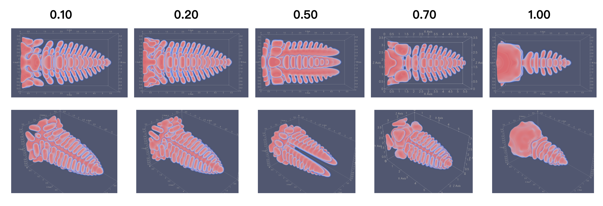
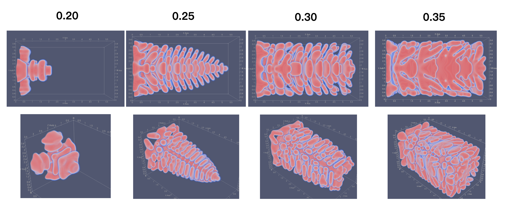

p runs from liquid at 0 to solid at 1, while T is dimensionless temperature. Interface width ε, relaxation time τ, and directional driving m govern growth. The temperature equation includes released latent heat.


δ controls cubic anisotropy and γ controls temperature sensitivity. My code uses σ = 1 when the phase gradient vanishes.
A plausible dendrite shape was only a starting point. I varied anisotropy, undercooling, temperature-related parameters, and seed size while inspecting the coupled phase and temperature fields. I also reorganized the finite-difference loops and memory layout before building parallel versions. These snapshots record how the developing morphology responded to those choices.


Seed-size and undercooling comparisons


Macromolecular phase separation · Model B
I started from DBA’s model of phase separation in chemically reactive macromolecular mixtures. Its original solver uses finite differences and forward-time stepping. I built three-dimensional Fourier pseudo-spectral solvers with semi-implicit (IMEX) time stepping, first with FFTW on CPUs and then with cuFFT on GPUs. In the adaptive prototype, Fourier coefficients are grouped into CUDA blocks whose activation follows Fourier-coefficient updates; neighboring blocks are also reactivated. Nonlinear chemical potentials and reactions are evaluated in real space, while transforms still cover the full domain.


X, Y, and Z are molecular volume fractions, and B = 1 − X − Y − Z is the buffer fraction. The logarithmic terms describe mixing and the χ terms describe interactions. ri are polymerization degrees, μz0 = −ln K sets the complex’s standard chemical potential, and gradient terms penalize interfaces.


Chemical potentials μi come from F after substituting the buffer constraint. Mi and vi are mobilities and molecular volumes. The three equations combine diffusive transport with a reversible reaction R; n and m set its stoichiometry.

The forward reaction consumes X and Y to form Z; the reverse reaction dissociates Z. k̃0 sets the reaction timescale and kBT is thermal energy. The implementation uses nondimensional chemical potentials in thermal units.
Separate real-space and Fourier-space recordings